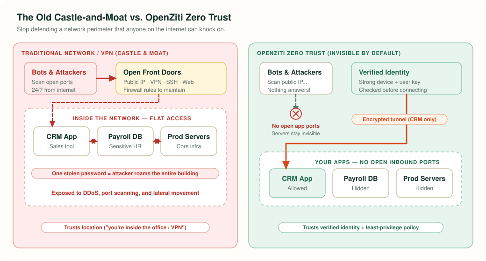
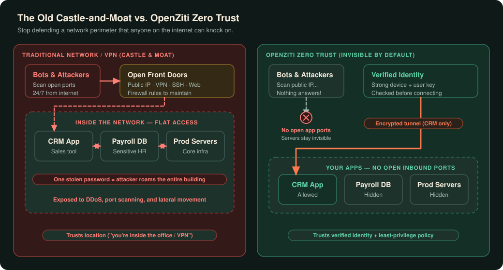
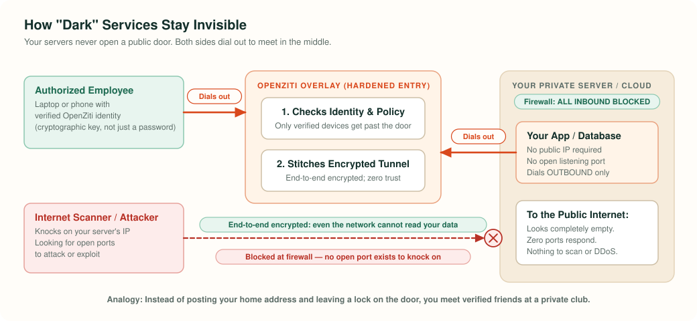
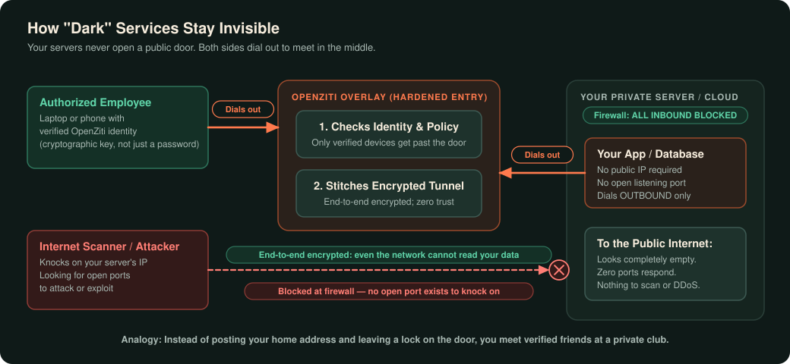
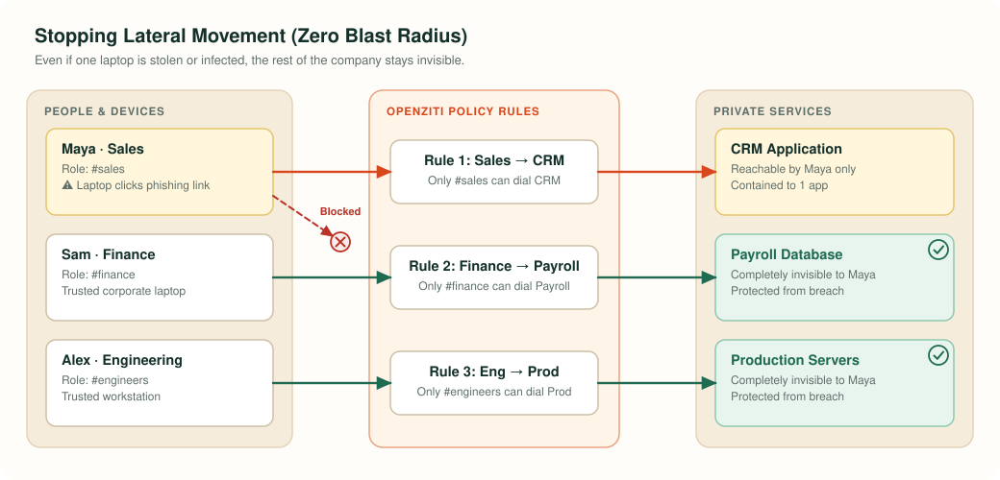
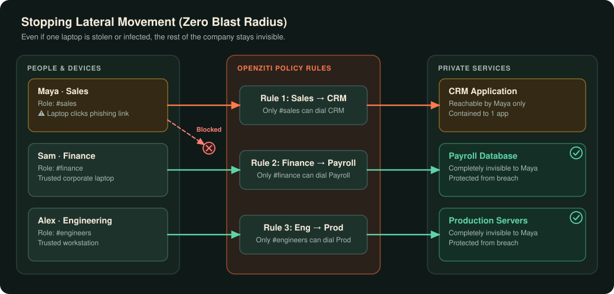
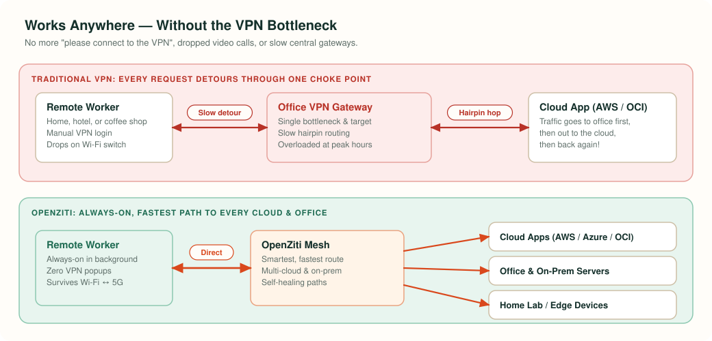
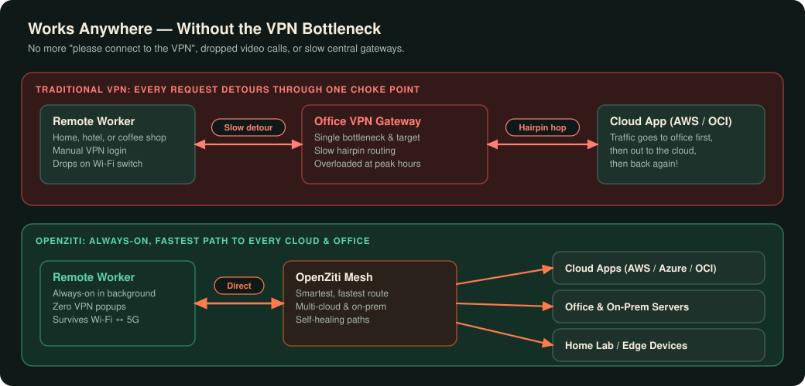
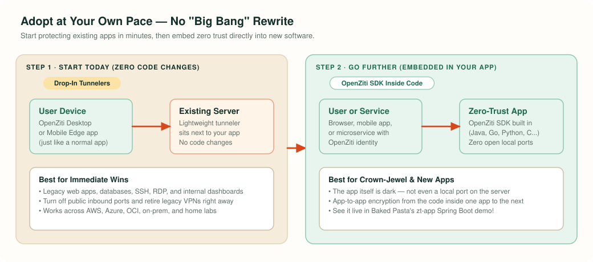
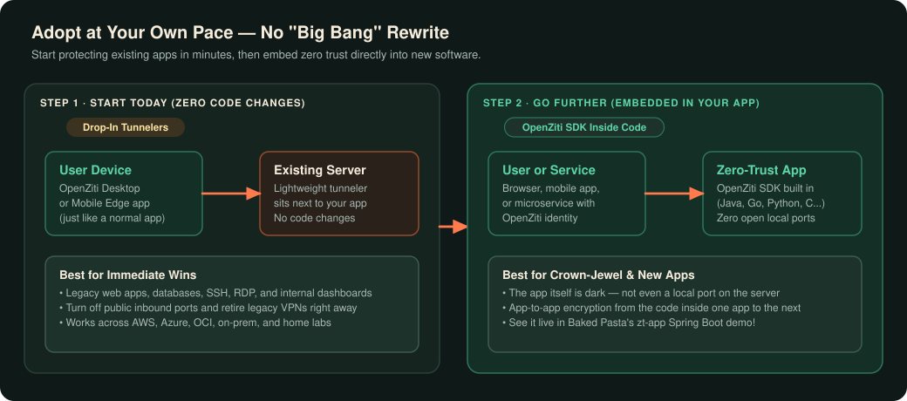

Why Use OpenZiti?
Modern, invisible networking that protects your apps and people — without the headaches of legacy VPNs, exposed server ports, or extra security sprawl.
Use → / ← or Space to navigate · G slide grid · N speaker notes · F fullscreen
The Old Castle-and-Moat Model Is Broken


You Can't Attack What You Can't Find


One Compromised Laptop ≠ Company-Wide Breach


Faster & Simpler Than Any VPN


Start Today With Zero Code Changes


Traditional VPN vs. OpenZiti
| Question | Traditional VPN / Firewall | OpenZiti |
|---|---|---|
| App servers exposed to scanners? | Yes — open public ports scanned 24/7 | No — app servers are outbound-only ("dark"); only the hardened overlay listens |
| If one laptop is compromised? | Can roam unless separate micro-segmentation tools are added & maintained | Contained by default — micro-segmentation is built in |
| Employee day-to-day UX? | Manual VPN logins, lag, dropped calls | Always-on, direct, seamless |
| Multi-cloud & hybrid offices? | Complex site-to-site tunnels & IP clashes | One private mesh across every cloud |
| Requires rewriting apps? | No | No — drop-in tunnelers now, SDKs later |
| Vendor lock-in? | Proprietary appliances & per-seat fees | 100% Open Source (Apache 2.0) |
Why Every Team Wins
Business Leaders
Cuts ransomware and data-breach blast radius, makes compliance audits straightforward, and avoids vendor lock-in with Apache 2.0 open source.
Everyday Employees
No more fighting VPN clients or waiting on IT tickets to work from home, a hotel, or a phone. Everything just works.
IT & Operations
Retires brittle firewall rule spreadsheets, public IP exposure, and complex multi-cloud VPN peering.
Software Developers
Connect apps securely across any network without wrestling with IP addresses, NAT traversal, firewalls, or TLS plumbing.
Common Questions & Myths
See It Live in 5 Minutes
Baked Pasta includes a self-contained local sandbox that runs a traditional web app side-by-side with an invisible, zero-port OpenZiti app — right on your laptop.
docs/WHY-OPENZITI.md for the shareable document.